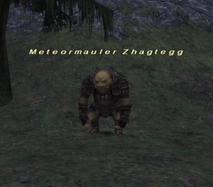

Level 75 reference · Zenith rules
|
Job: Monk
|
 |

|
Zone |
Level |
Drops |
Steal |
Spawns |
Notes | ||||||
|
35-40 |
1 |
A, S, L, Sc
| |||||||||
|
HP = Detects Low HP; M = Detects Magic; Sc = Follows by Scent; T(S) = True-sight; T(H) = True-hearing JA = Detects job abilities; WS = Detects weaponskills; Z(D) = Asleep in Daytime; Z(N) = Asleep at Nighttime | |||||||||||
- Notes:
- Uses Hundred Fists
- 21hour repop just north of Davoi zoneline. It has about 10 minute pop window starting at the 21 hour mark.
- Is in a Party with Orcish Serjeant and Orcish Cursemaker. Defeat the 2 Orcish Serjeant (one that is partied with the NM, the other that may link) before attacking Meteormauler if possible.
Adapted from Eden Wiki: Meteormauler Zhagtegg · Contributors and history · CC BY-SA 4.0. Revision 44511. Layout, links and optional background text adapted for Zenith.